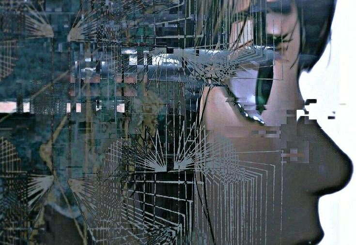

Deslumbridos
Nesse mundo, algumas doenças bacterianas apresentam uma baixa probabilidade de desenvolver uma

habilidade
inata para resistir a vacinas ou antibióticos. Contudo, essa porcentagem vem crescendo nos últimos anos e,
junto a esses casos, começaram a surgir enfermidades inéditas na história, como a misteriosa Tesseria, que
afeta os chamados Deslumbridos.
A Tesseria é uma doença ocular que se manifesta entre os 10 e 15 anos de idade no caso dos Humanos. Ela
concede ao portador a capacidade de enxergar exclusivamente a quarta dimensão, algo impossível de descrever
até mesmo por quem a vivencia. À primeira vista, pode parecer extraordinário, mas a experiência rapidamente
se torna insuportável, muitos enlouquecem, e alguns chegam a se cegar voluntariamente para nunca mais
enfrentar tal visão.
Sem cura conhecida, recomenda-se que os afetados utilizem vendas para bloquear a visão e realizem longas
sessões de terapia, a fim de lidar com o impacto psicológico. Com o tempo, porém, as vítimas passam a
interagir de forma mais intensa com a quarta dimensão, abrindo fendas no espaço-tempo que lhes permitem
deslocar-se para outros lugares. Além disso, mesmo de olhos fechados, demonstram uma percepção sensorial
claramente ampliada.
Mecânicamente falando, Deslumbridos possuem duas habilidades primárias quaisquer de Deslumbridos, todas
diminuem instabilidade e sanidade, assim levando-os virar Torturados ou a morte mesmo.
Deslumbridos
- Resistência+5
- Percepção+5
- Fé+2
- Interpretação−5
- Instabilidade−5
- Sorte−3
- Mental−2